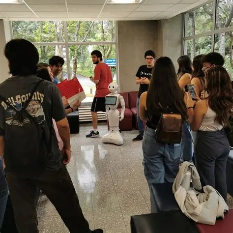

Big Data
Datos que hablan: la ECCI enseña a convertir millones de registros en decisiones
Estudiantes de Bases de Datos y Análisis de Datos muestran cómo la visualización transforma cifras en historias claras.
Las noticias que están moviendo la ECCI
Estudiantes de Bases de Datos y Análisis de Datos muestran cómo la visualización transforma cifras en historias claras.
El Procesamiento de Lenguaje Natural llega a las aulas con prácticas reales y modelos que corren en equipos locales.
Una nueva generación de aplicaciones busca que el control de un computador sea posible para personas con discapacidad motora.
Lo más reciente, directo desde la ECCI

La Escuela de Ciencias de la Computación e Informática abrió sus puertas a la inteligencia artificial y la comunidad estudiantil respondió: pasillos llenos, celulares en alto y una pregunta en el aire, ¿cómo será trabajar junto a las máquinas?
La ECCI abrió sus puertas a la inteligencia artificial con una actividad en la que estudiantes y docentes se acercaron a conocer de cerca un robot humanoide y las tecnologías que lo hacen posible. La iniciativa busca acercar la IA a toda la comunidad universitaria y fomentar el debate sobre su uso responsable.
Leer noticia completaDebate abierto ¿La IA es aliada o amenaza para la universidad?
Tu noticia quedará pendiente de aprobación. Un moderador la revisará antes de publicarla en el portal.